失序之钟 · f8188783660b
小站 → 钟心 → 牧风者
整屏空间与氛围优化，13房、53个正式镜头取景。保留已定动作、机关与路线；重叠裁边前后碰撞并集一致。
初访：P01 → P31 → P32 → P33 → Z01，调查后原路返回P01。
北行：P01 → P08 → P06 → P13 → P04 → P25 → P26 → P27 → P14。
P06直达P14是战后捷径，首访走上述长路。
直达试玩是隔离夹具，不写正式存档。主路使用base能力；P14战后钩索回访取景可在试玩顶栏选择H。关卡审核平台未部署。
P01 · 钟外小站
路线起点和回归休整：保留已认可的疏落旧镇、动物居民、上提镜头与北口剧情。此次复核，不堆加装饰。
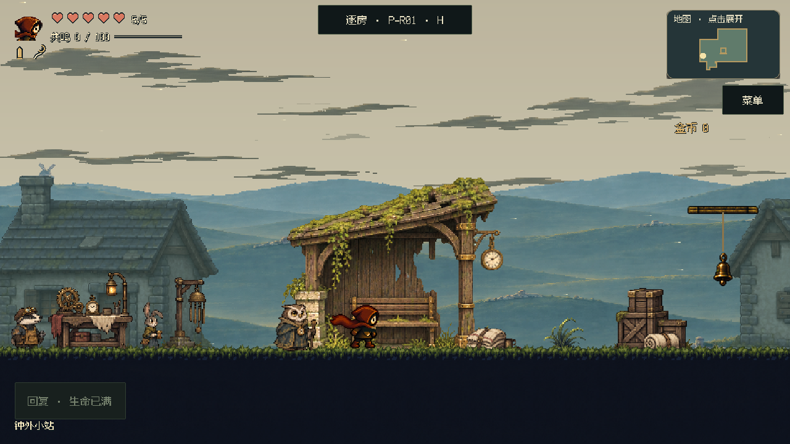
P31 · 站外铃场
走出小站的铃场：保留双吊台和断渠，旧路遗迹压低于动作带，精密换乘处留白。
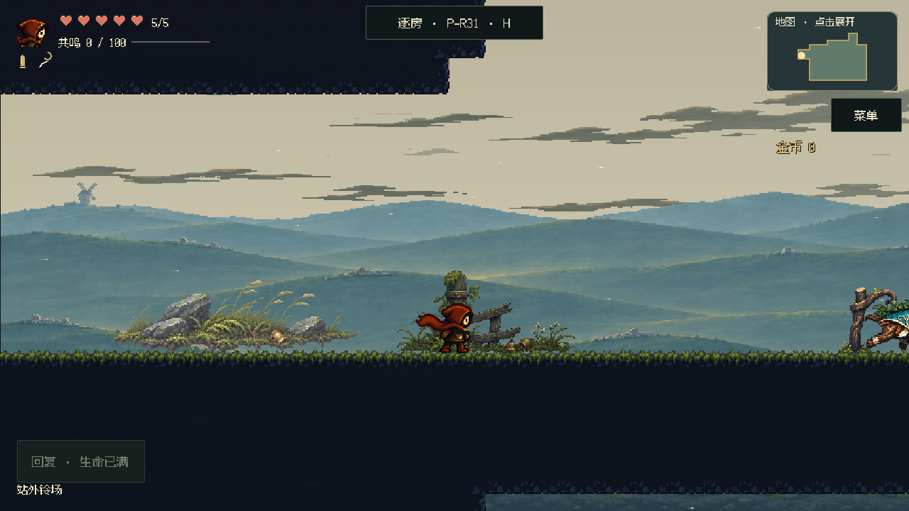
正常速度短片 · 2.7秒 · 0.66MiB
单独下载短片
P32 · 悬铃长桥
远眺世界钟心：固定塔景与独立流云，删除多余桥柱，岸上栅栏、灯与行囊靠实地收口。
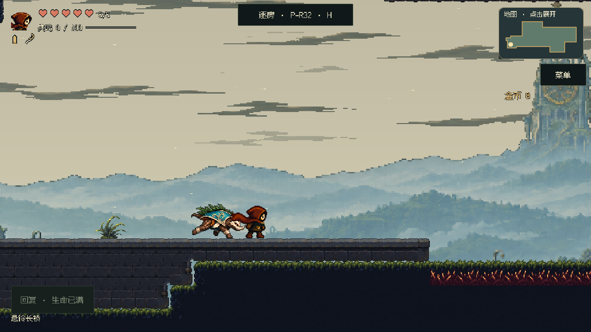
正常速度短片 · 3.6秒 · 0.98MiB
单独下载短片
P33 · 钟影前庭
进入钟心的前庭：新绘宽塔基和后墙包住原门脸，草岸在真实建筑台地处接石材，门洞内部保持暗深。
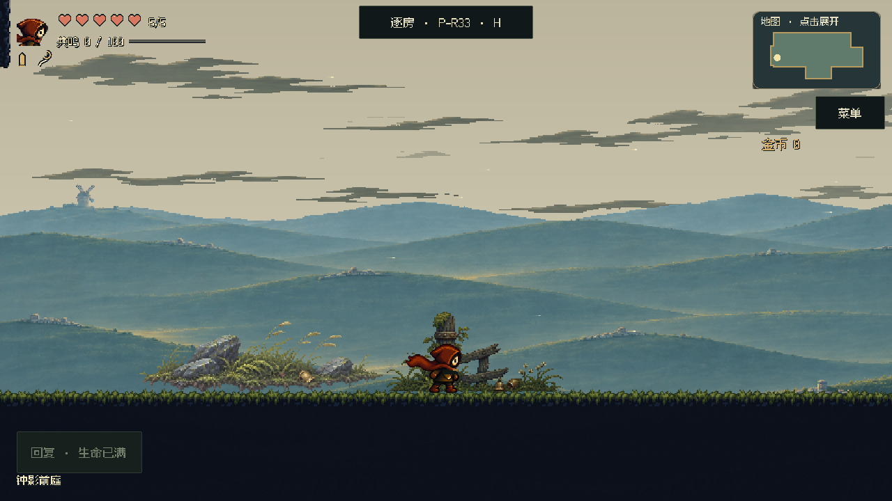
正常速度短片 · 6.9秒 · 1.89MiB
单独下载短片
Z01 · 钟心门厅驻点
发现损毁的钟心：新绘低对比后殿，实体左上窗与光路配合，损毁钟体和守钟匠成为前层焦点。
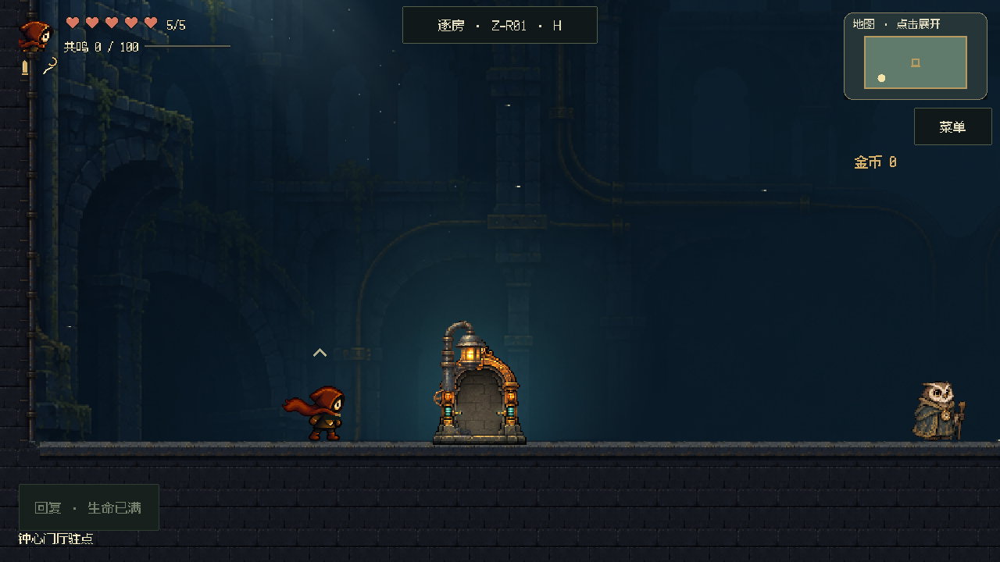
P08 · 封井回廊
封井登高与反冲换台：专用连续井壁、退后的检修横带和随载台启停的传动轮，暖灯标明停靠岸。
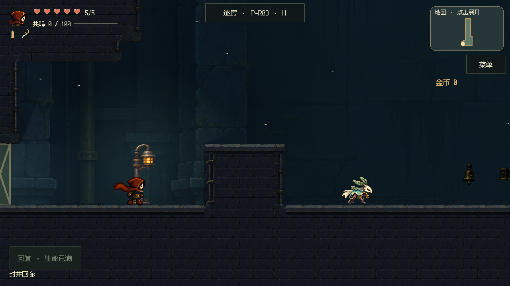
正常速度短片 · 8.9秒 · 0.85MiB
单独下载短片
P06 · 风铃岔路
开放选路中庭：保持中央净空与多层落点；远路脊、岸边遗物和疏风点交代空间，不把中心塞满。
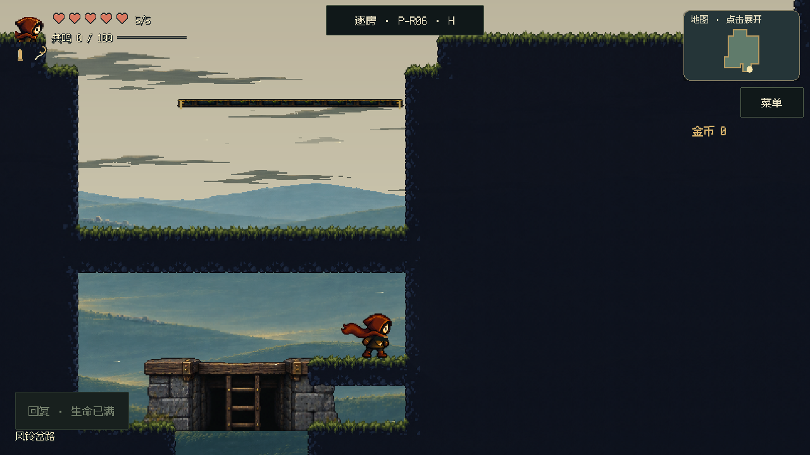
P13 · 旧路肩高台
普通下路与荆棘奖励上路：下路有疏落旧路痕迹，上路优先读清刺口与落点；修正草和围栏的接地。
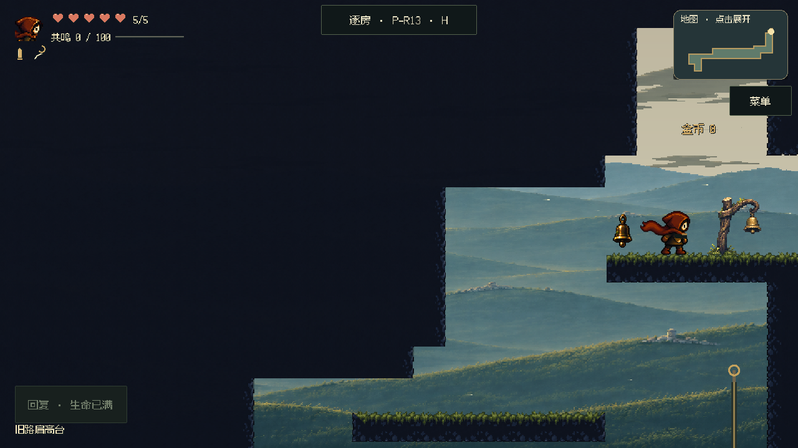
正常速度短片 · 3.3秒 · 1.17MiB
单独下载短片
P04 · 倒钟田垄
断桥与上行守台：删除不必要长柱，保留桥体材质和反冲落点，风速与开放地形相称。
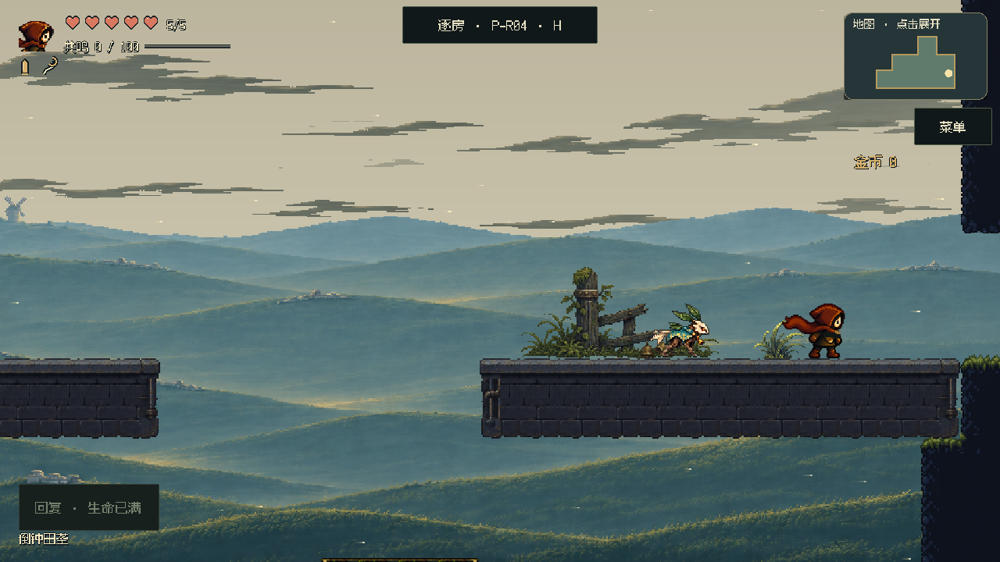
P25 · 倒铃果园
倒铃果园与风车入口：保留已认可的桥柱接缝、疏果林和完整门廊；风动与相邻开阔地形成区别。
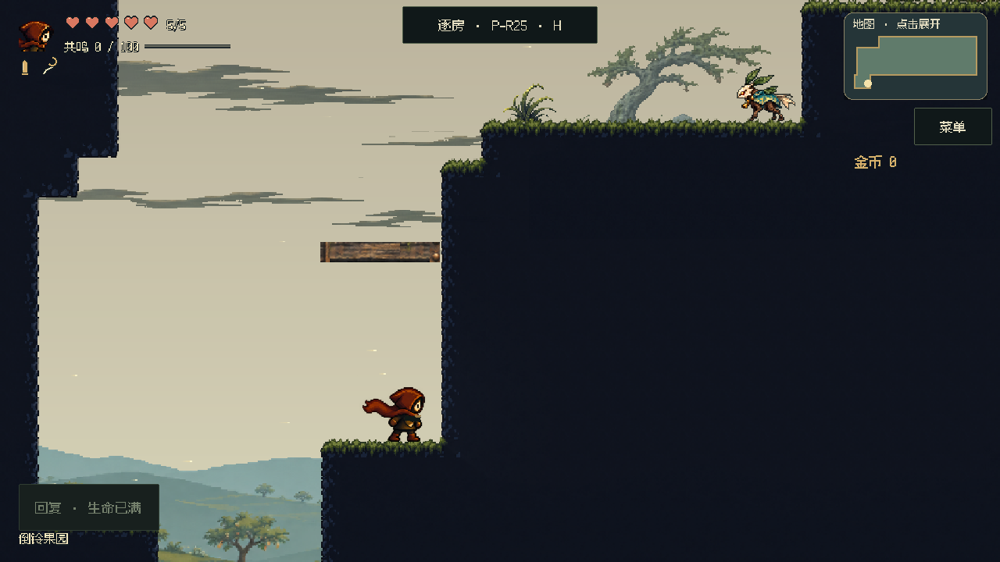
P26 · 旧风车内廊
双吊台室内挑战：保留窗间墙和暖灯，托梁与后柱退入环境色，清理重叠地形但不改机关和换台。
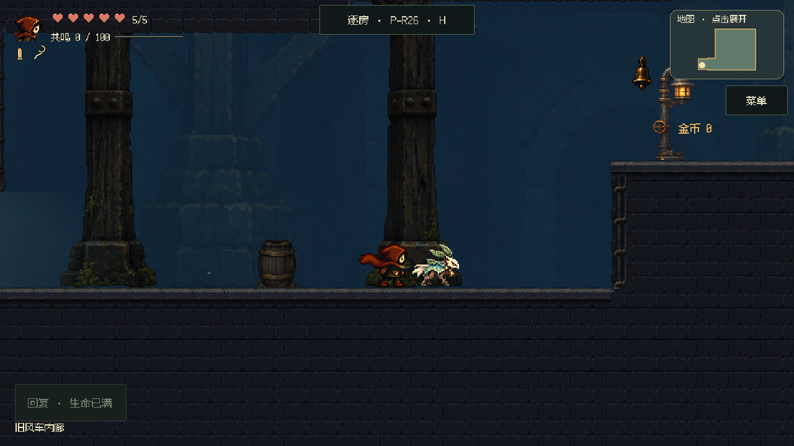
正常速度短片 · 4.3秒 · 0.73MiB
单独下载短片
P27 · 背风检修棚
战前背风休整：旧棚、稀疏检修物与停靠灯组成安静中段，空中动作带继续保持清楚。
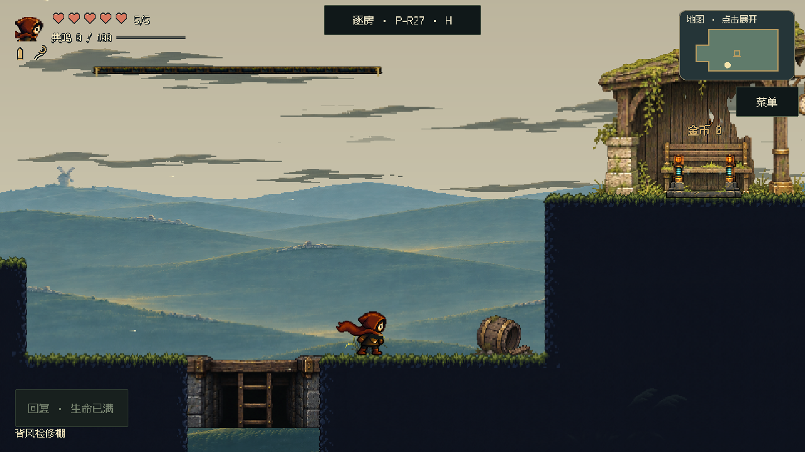
P14 · 牧风者庭地
牧风者战场：内场接入原生平原地形，去除旧亮绿地面；地标降低反差，战斗平台、招式与镜头不变。
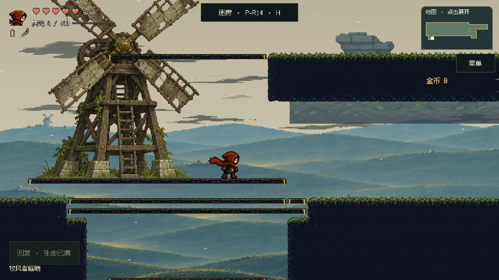
正常速度短片 · 5.7秒 · 2.46MiB
单独下载短片
截图以相同玩家位置和正式镜头拍摄，冻结普通怪物。短片使用声明的局部起点，普通遭遇隔离，保留实际控制器、反冲、载台和P14战斗；P26片中检修岸展示与换台是两个局部片段。用于构图和动作可读性复查，不代表完整新档通关、最终战斗平衡或实体手机性能验收。
以后“优化视觉体验”默认检查整屏构图、空间层次、区域材质、真实光源、环境运动、接地、穿插与碰撞可读性；无需逐条重述。指定房间或路线即可，涉及玩法取舍另行确认。